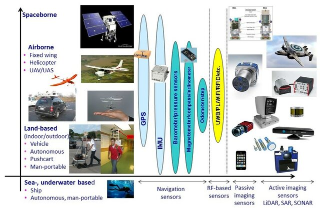
1 Introduction to Remote Sensing
1.1 Summary
| Key Aspect | Description |
| Definitions | Remote sensing as a technique for collecting Earth’s surface information from a distance. |
| Platforms | Satellites, planes, drones (“spectroradiometer”in a lab or in the field)used for data acquisition. |
| Sensor Types | Passive and active sensors, their principles and examples. |
| Electromagnetic Radiation | Interaction with Earth’s surface and atmosphere. |
| Data Formats | Focus on raster data and its applications. |
| Resolutions | Spatial, spectral, temporal, radiometric resolutions in remote sensing. |
| Applications | Land cover, agriculture, climate change, disaster management. |
1.1.1 definitions
NASA defines remote sensing as the process of acquiring information from a distance, commonly associated with Earth Observation (EO), utilizing sensors on platforms like satellites, drones, and more. Currently, over 150 satellites equipped with these sensors orbit Earth, collecting essential data. However, the proliferation of space technology has led to a challenge with space debris, with NASA tracking over 27,000 pieces, underscoring the need for strategies to manage and mitigate space pollution.
1.1.2 Platforms
Remote sensing is accomplished using sensors mounted on various platforms, each offering unique capabilities for data collection from the Earth’s surface, atmosphere, and oceans:
Satellites: Capable of systematically covering vast areas, satellites revisit the same points on Earth from daily to every 16 days. This regular observation schedule is crucial for tracking environmental changes, weather patterns, and monitoring natural disasters on a global scale.
Planes (aerial imagery): Provide targeted, high-resolution imagery for specific areas, making them invaluable for detailed surveys, agricultural assessments, and environmental monitoring.
Drones: Offer unparalleled flexibility and precision, capturing detailed data at low altitudes for applications such as precision agriculture, construction monitoring, and environmental conservation.
Phones: Enable widespread, citizen-driven data collection, contributing to urban studies, crowd-sourced mapping projects, and local environmental observations.
Free standing on the ground or sea (with handheld devices): Ground and maritime platforms, like tripods, buoys, and hand-held devices, allow for direct, in-situ measurements of soil, water, and atmospheric conditions, essential for localized research and monitoring.
Various platforms and sensors used for remote sensing Source: Toth (2018)
1.1.3 Sensor Types
Remote sensing sensors are broadly classified into two categories based on their operational principles: passive and active sensors.
Passive Sensors: Capture energy naturally reflected or emitted by objects, relying on sunlight as the primary light source. Examples include cameras and satellite sensors, ideal for environmental monitoring and Earth observation during daylight hours.
Active Sensors: Generate their own energy to illuminate targets, measuring the reflected energy. Technologies like LiDAR and radar fall into this category, enabling detailed surface mapping and atmospheric studies, regardless of day or night conditions.
Choosing between passive and active sensors depends on the project’s goals, like desired detail, target area conditions, and when data is collected. While passive sensors excel in natural light conditions, active sensors offer versatility in challenging environments (e.g., night-time or cloud-covered areas). For example, Synthetic Aperture Radar (SAR) excels in overcoming challenges posed by clouds, volcanic ash, and darkness, thanks to its ability to operate at longer wavelengths across different bands (e.g., P, L, S, C, X, Ku, K). This versatility enhances Earth observation capabilities, enabling data acquisition in nearly all weather and lighting conditions.
1.1.4 Electromagnetic Radiation
Electromagnetic radiation (EMR) is essential for remote sensing, acting as the medium that carries information from the Earth’s surface to sensors located on satellites, aircraft, or ground-based platforms. EMR encompasses a spectrum of wavelengths, including visible light, infrared, and microwaves, each interacting uniquely with different surface materials and atmospheric conditions.
Fundamental Principles:
Wavelength (λ): The distance between consecutive wave peaks, determining the radiation’s energy and type.
Frequency (ν): The number of wave cycles per second, inversely related to wavelength (λ=c/ν), where c is the speed of light (3×10⁸ m/s)
EMR propagates through space, carrying energy with oscillating electric and magnetic fields at right angles to each other and the direction of travel.
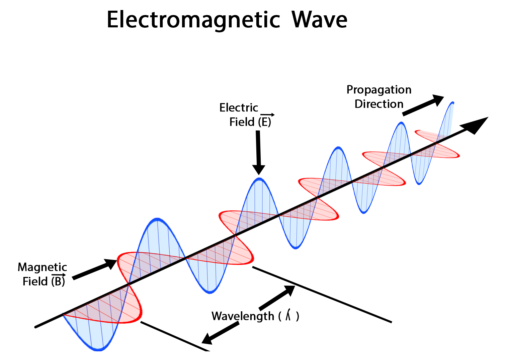
How do electromagnetic waves wave Source: imathworks.com
Interaction with Earth’s Surface:
The interaction of electromagnetic radiation (EMR) with the Earth’s surface—encompassing reflection, absorption, transmission and scattering—fundamentally shapes the data captured by remote sensing technologies. Reflective properties reveal surface textures and compositions, absorption characteristics inform on material types and conditions, and transmission data offers insights into the substance’s transparency to specific EMR wavelengths.
Atmospheric Influence:
While traversing the atmosphere, EMR may be scattered by particles or absorbed by gases, altering its path and intensity before reaching the surface.
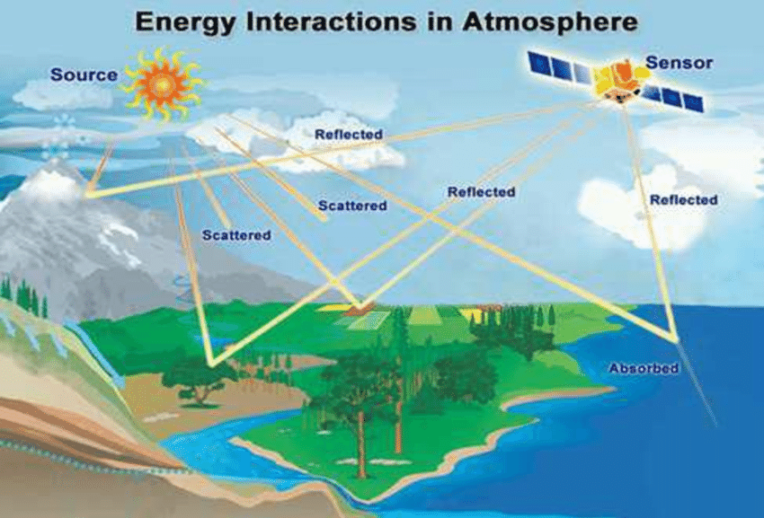
Electromagnetic radiations’ interactions with Earth’s surface and atmosphere Source: Deepak Kumar Soni (2013)
Scattering Phenomena:
Rayleigh Scattering: Predominant when atmospheric particles are significantly smaller than the radiation’s wavelength, primarily affecting shorter wavelengths and coloring the sky blue.
Mie Scattering: Arises when particle sizes are comparable to the wavelength, altering all wavelengths somewhat uniformly, noticeable during light’s passage through atmospheric pollutants or moisture.
Non-selective Scattering: Manifests when particles exceed the radiation’s wavelength in size, impacting all wavelengths alike and contributing to clouds’ white appearance.
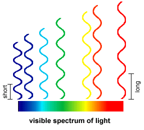
Comparison of visible wavelengths Source: vertebratepest.wordpress.com
Influence on Visual Perception:
Blue light scatters more intensely in Earth’s atmosphere due to its shorter wavelength, creating a blue sky and vivid sunsets with red and orange hues as the sun’s rays travel through more atmosphere. In contrast, the Moon’s lack of atmosphere results in a black sky and challenges in distance perception due to no scattering, while the ocean’s blue color arises from the absorption of longer wavelengths and scattering of shorter blue wavelengths, deepening in hue with increased depth.
Specular Reflection VS Diffuse Reflection
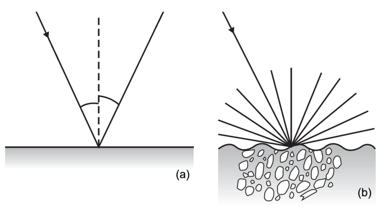
Specular and diffuse reflection Source: Tempfli, K. et al. (2009)
Specular Reflection occurs on smooth surfaces (like water or polished rocks), where light reflects in a single, specific direction. This reflection is directional, causing bright spots in images if the angle aligns with the sensor.
Diffuse Reflection happens on rough surfaces (such as soil or vegetation), scattering light in multiple directions. This reflection is uniform, providing consistent information regardless of the viewing angle.
Impact on Remote Sensing: The main difference is how they affect image brightness and information consistency. Specular reflection can vary with observer angle, leading to potential bright spots. Diffuse reflection offers reliable data about the Earth’s surface, useful for applications like vegetation monitoring or land cover classification.
In the forthcoming studies, by exploring phenomena such as the Bidirectional Reflectance Distribution Function (BRDF), polarization, and fluorescence, we will gain a deeper understanding of the complexities of electromagnetic radiation’s interaction with the Earth’s surface...
1.1.5 Data Formats
Remote sensing data primarily uses raster formats, organizing the Earth’s surface into pixels, each representing specific information like reflectance or temperature. Key raster data formats include:
Band Interleaved by Line (BIL): Facilitates line-by-line analysis across multiple bands.
Band Sequential (BSQ): Groups all pixels of a band together, suitable for single-band processing.
Band Interleaved by Pixel (BIP): Stores all band values for each pixel together, ideal for multi-spectral analysis.
Videro: Organizing Multi-band Image Data (BIL,BIP and BSQ Formats)
GeoTIFF: The most common format, incorporating geographic metadata, and widely supported across GIS and remote sensing platforms.
LiDAR data: Capturing 3D point information, illustrates the adaptability of these formats for specific applications like elevation modeling.
1.1.6 Resolutions
In remote sensing, data quality and applicability are determined by four key resolutions: spatial, spectral, temporal, and radiometric. Each plays a crucial role in how Earth observation data is captured, analyzed, and utilized.
Spatial Resolution
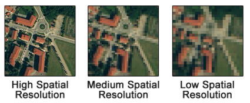
Source: gisgeography.com
Spatial resolution refers to the size of one pixel in a raster image, which can range from as fine as 10 cm to several kilometers. It determines the smallest object that can be detected on the Earth’s surface, with higher resolutions providing more detail.
Spectral Resolution
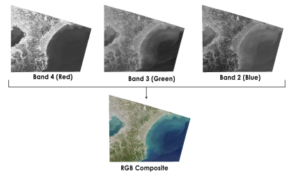
Source: gisgeography.com
Spectral resolution describes the ability of a sensor to define wavelength intervals or bands. It ranges from broad bands capturing basic color information in the visible spectrum to narrow bands that can identify specific spectral signatures of materials. Spectral signatures are unique to each feature on Earth but are limited by atmospheric windows that allow only certain wavelengths to pass through unabsorbed.
Temporal Resolution
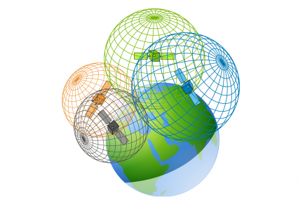
Source: gisgeography.com
Temporal resolution is about the frequency at which a sensor revisits the same location, which can vary from multiple times a day to once every few weeks. This is vital for monitoring changes over time, such as vegetation growth, urban development, or the progression of natural disasters.
Radiometric Resolution
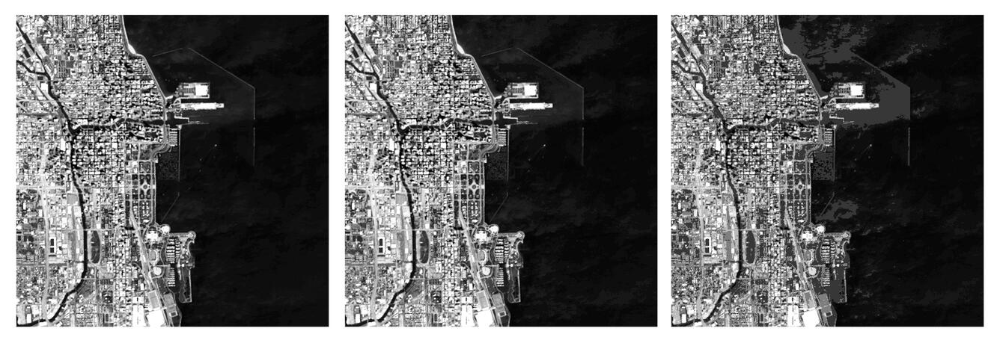
Source: USGS
Radiometric resolution indicates a sensor’s sensitivity to detect slight differences in light or reflectance levels, essentially the range of possible values a sensor can record. This can vary from 256 levels (8-bit) to over 2048 levels (11-bit), affecting the sensor’s ability to distinguish between similar surfaces.
Each type of resolution has its balancing act, influenced by the sensor’s design and the orbit type, whether geosynchronous or geostationary. The choice of sensor and its resolutions is dictated by the specific needs of a project, including the size of features to be observed, the date range of interest, revisit requirements, spectral sensitivity, and budget constraints. Understanding these resolutions is essential for selecting the appropriate remote sensing technology to answer specific scientific, environmental, or planning questions.
1.2 Applications
In the practical section, we learned how to download and process Sentinel and Landsat satellite data, and analyzed the downloaded data using QGIS, SNAP, and R software.
1.2.1 SNAP
SNAP (Sentinels Application Platform) is a free and open-source software platform developed by the European Space Agency (ESA) designed to provide comprehensive support for processing and analyzing data from the Sentinel satellite series. This platform is specifically aimed at earth observation data, offering a wide array of tools for the preprocessing, analysis, and visualization of remote sensing data.
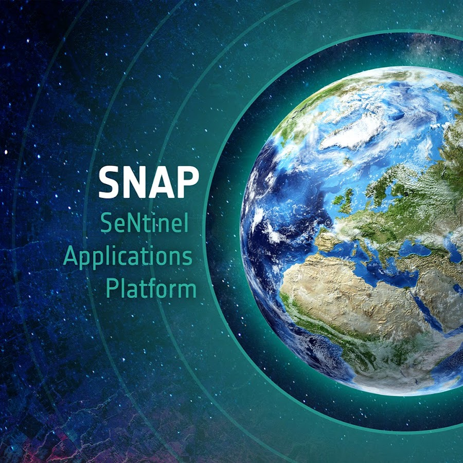
The platform includes a series of toolboxes, each targeting specific data processing tasks such as image correction, classification, image synthesis, and change detection. These toolboxes offer a broad range of algorithms that enable users to perform complex analyses and interpretations of remote sensing data.
1.2.2 Sentinel
The Sentinel satellites are part of the Copernicus program, a cornerstone of the European Union’s efforts to monitor the Earth and its environment for the benefit of all European citizens. This fleet of satellites provides a unique set of observations, starting from high-resolution land and ocean monitoring (Sentinel-1 radar and Sentinel-2 optical sensors) to atmospheric composition (Sentinel-5P). Sentinel data is pivotal for a wide range of applications, including climate change, land use change detection, urban planning, and natural disaster assessment and management.

SNAP is particularly well-suited for processing Sentinel data. It offers specialized toolboxes for Sentinel-1, Sentinel-2, and Sentinel-3, among others, facilitating tasks such as radar interferometry, land cover classification, and water color monitoring. These capabilities are enhanced by SNAP’s ability to handle the large data volumes produced by the Sentinel fleet, providing efficient data access and processing tools that cater to both scientific research and operational monitoring needs.

1.2.3 Landsat
While SNAP is primarily designed for Sentinel data, its flexibility and broad range of functionalities also make it useful for processing Landsat data, one of the longest-running sources of satellite imagery used for studying land changes over time. Landsat data complements Sentinel data by offering a historical perspective on land use and land cover changes, going back over four decades. This long-term dataset is invaluable for understanding environmental changes, assessing ecosystem health, and planning land management strategies.

Using SNAP for Landsat data involves leveraging its preprocessing, analysis, and visualization capabilities to manage Landsat’s multispectral imagery. Although SNAP does not include dedicated toolboxes for Landsat as it does for Sentinel satellites, its generic tools for raster data handling, image correction, and classification can be applied to Landsat images. This allows users to integrate Landsat data with Sentinel observations for comprehensive Earth observation analyses, offering a broader temporal and spectral range of environmental monitoring capabilities.
1.2.4 Using R
The process involves exporting Sentinel and Landsat data from SNAP as GeoTIFFs and shapefiles, then analyzing these in R using packages like terra for direct pixel value extraction. Custom R functions facilitate efficient processing and statistical analysis of spectral signatures for different land cover types. The analysis culminates in visualizing spectral signatures through density plots and comparative graphs, leveraging R’s graphical capabilities for detailed environmental analysis. This streamlined approach in R enhances the flexibility and depth of spectral analysis.
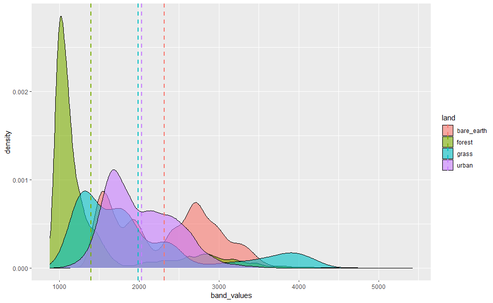
1.2.5 Practical Application of RS
Urban Planning and Infrastructure Monitoring
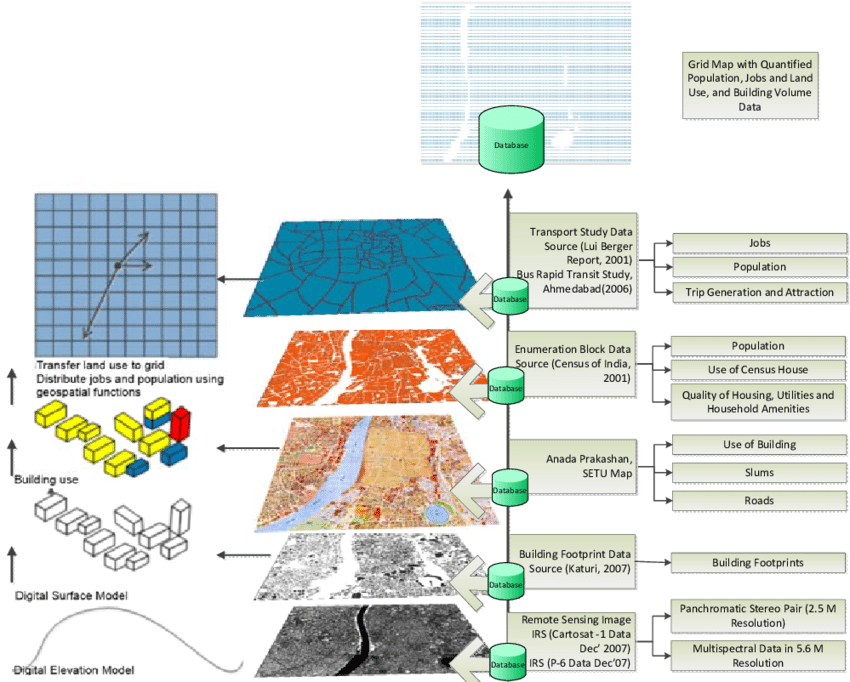
Remote Sensing and GIS Data Fusion Source:Talat Munshi (2013)
Utilizing spatial resolution principles, high-resolution imagery enables precise urban layout mapping and infrastructure changes over time, critical for sustainable urban development. GeoTIFF’s geographic metadata facilitates detailed spatial analyses in GIS platforms, optimizing land use and planning.
Environmental Monitoring and Conservation
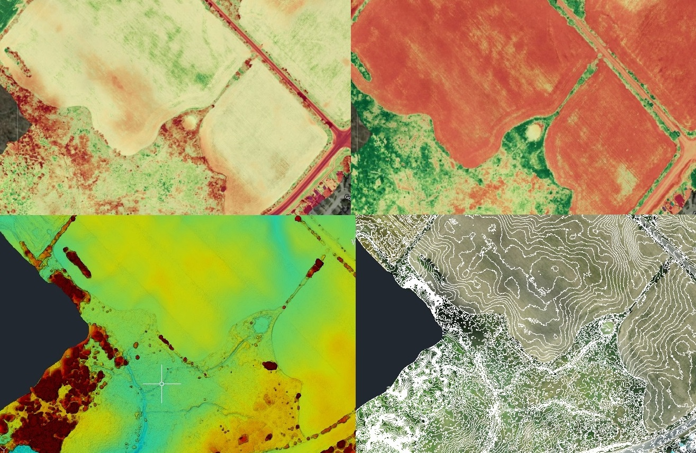
Agriculture Mapping, Crop & Plant Health Source: dronesurveycanada.ca
Informed by spectral resolution and EMR interactions, remote sensing precisely monitors ecosystem health, identifying vegetation types and assessing environmental changes. Multispectral and hyperspectral imagery, capturing extensive wavelength data, are essential for detailed environmental analyses.
Disaster Response and Climate Change Tracking
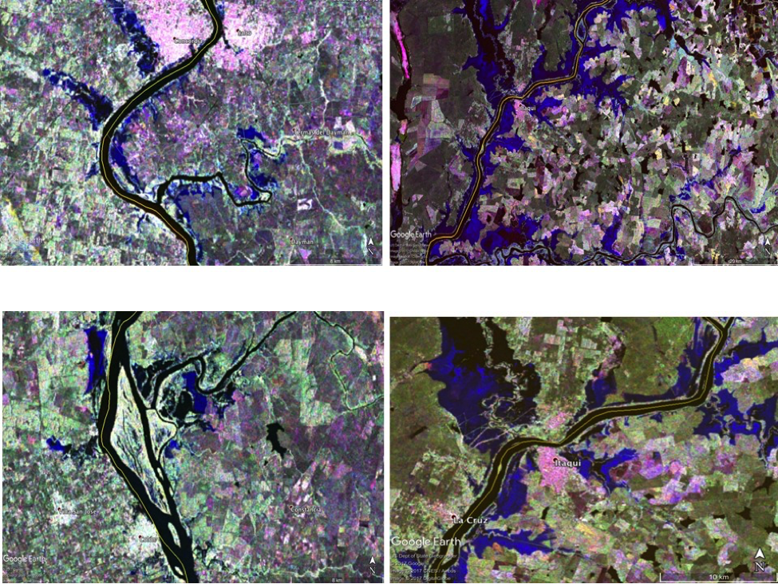
SAR Flood Map for 2017 Uruguay Flooding Source: disasters.nasa.gov
Temporal resolution’s importance is underscored in disaster management and climate change studies, where SAR imagery’s all-weather capability ensures continuous monitoring. This is vital for quick disaster response and understanding long-term environmental trends.
Navigating Atmospheric Challenges
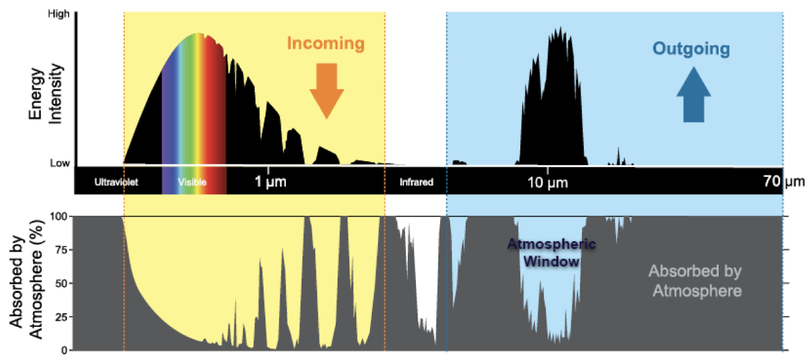
Atmospheric windows Source: noaa.gov
Addressing atmospheric absorption issues is crucial for uninterrupted Earth observation. Remote sensing techniques that penetrate atmospheric barriers enable consistent monitoring of the planet’s surface. For example: the places with limited or almost no absorption by the atmosphere is known as the atmospheric window, allowing us to peer into the atmosphere at various wavelengths.
1.3 Reflection
As a master’s student specializing in Urban Spatial Science, I found my encounter with CASA0023 (Remotely Sensing Cities and Environments) to be truly fascinating. It has provided me with a fresh perspective that beautifully complements my prior studies in Geographic Information Systems (GIS) under CASA0005. This course illuminated the synergy between Remote Sensing (RS) and Geographic Information Systems (GIS), showcasing their combined strength in shaping my academic and professional path.
RS provides a broad perspective essential for environmental mapping, whereas GIS offers precision in spatial analysis, critical for urban planning. This shift from GIS’s detail-oriented analysis to RS’s wide-ranging observation highlights the complementary nature of spatial sciences.
Their collaboration is especially impactful in areas like disaster management and climate change, where integrating RS and GIS data leads to actionable insights for complex challenges.
Through CASA0023, I aimed to enrich my understanding of RS and GIS’s collaborative potential to address urban and environmental issues. Beyond gaining technical skills, this journey fostered a critical perspective on utilizing these technologies innovatively, aiming for sustainable solutions that consider their limitations and the complexity of their integration.
1.4 References
Drone Survey Canada, n.d. Drone Survey & Aerial Survey Plant Variability. Available at: https://dronesurveycanada.ca/drone-survey-aerial-survey-plant-variability/ [Accessed 13 January 2024].
GIS Geography, n.d. Remote Sensing Earth Observation Guide. Available at: https://gisgeography.com/remote-sensing-earth-observation-guide/ [Accessed 14 January 2024].
iMathWorks, n.d. How do electromagnetic waves wave. Available at: https://imathworks.com/physics/physics-how-do-electromagnetic-waves-wave/ [Accessed 13 January 2024].
Munshi, T., 2013. Built form, Travel Behaviour, and Low Carbon Development in Ahmedabad, India. DOI: 10.13140/2.1.1217.9845.
Soni, D., 2018. Estimation of Rainfall-Runoff in a Watershed Using Remote Sensing and GIS.
Spatial Post, 2023. Types of Platforms In Remote Sensing: A Comprehensive Guide. Available at: https://www.spatialpost.com/types-of-platforms-in-remote-sensing/#google_vignette [Accessed 13 January 2024].
Tempfli, K. et al., 2009. Principles of remote sensing: an introductory textbook. Enschede: International Institute for Geo-Information Science and Earth Observation.
Toth, C., 2018. The Future of Remote Sensing: Harnessing the Data Revolution. GeoActa, 42(2), pp.1-6.
USGS, n.d. What is Radiometric Resolution? Available at: https://www.usgs.gov/faqs/what-radiometric-resolution [Accessed 14 January 2024].